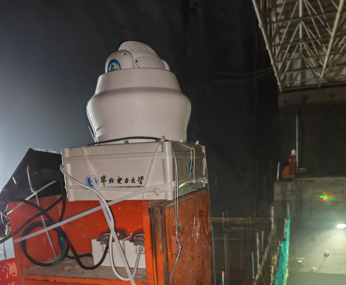
Non-contact Deformation Monitoring
Explored how camera images can reveal small surface movements in tunnels and other industrial environments.
View projectComputer science at Edinburgh.
Exploring AI, collecting moments,
and finding words along the way.
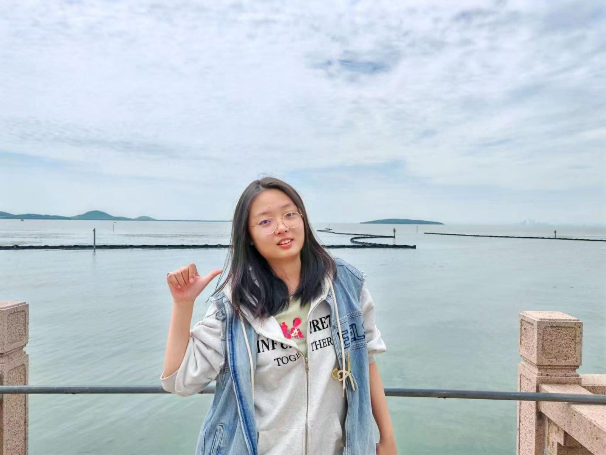
a little hello by the water.Python, C, C++, Java, HTML, algorithm implementation, experiment pipelines.
Graph neural networks, multimodal learning, training and evaluation workflows.
Image processing, digital image correlation, deformation analysis, CAD-adjacent workflows.
Mandarin Chinese (Native)
English (IELTS 7)
Korean
Selected work in multimodal learning, industrial computer vision, and 3D reconstruction.

Explored how camera images can reveal small surface movements in tunnels and other industrial environments.
View project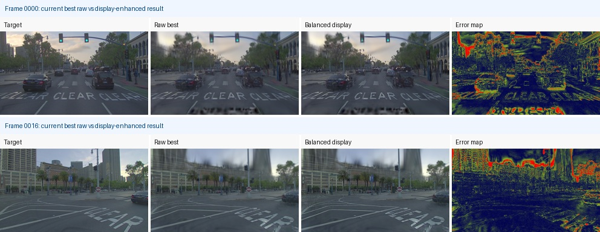
Combined laser scans and photographs to reconstruct industrial scenes in 3D, using point clouds to guide the geometry.
View project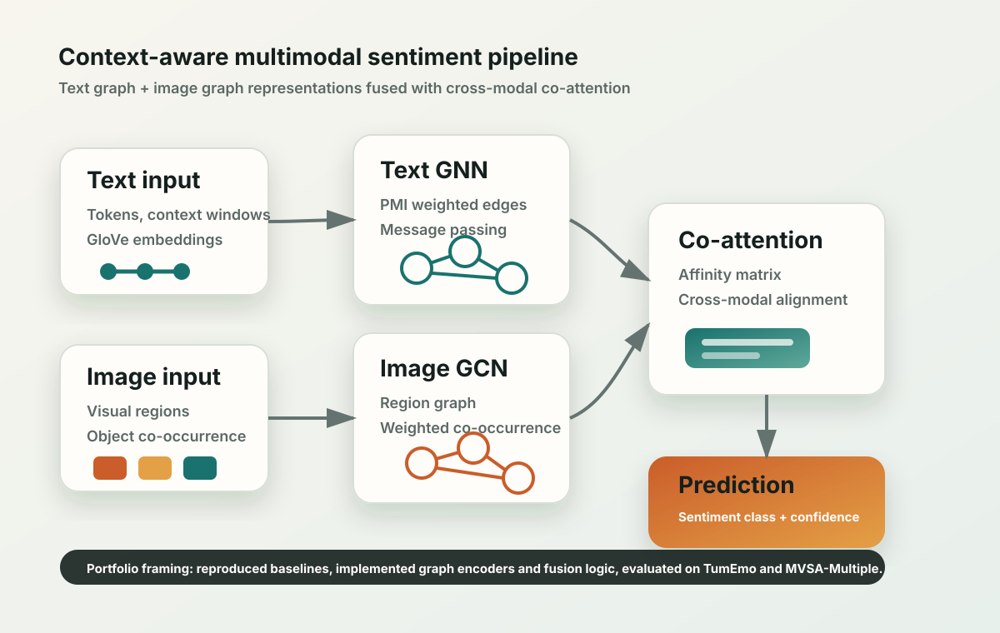
Explored how images and text work together to express sentiment, using graph neural networks to connect the two.
View projectResearch and industry work spanning multimodal algorithms, engineering AI, and computer vision.
Designed and supported image-text multimodal algorithm solutions, including cross-modal feature interaction, representation modelling, inference, evaluation, and demo development.
Contributed to an enterprise survey and design LLM using open-source frameworks, engineering standards, and knowledge bases for automated engineering design review.
Developed CAD functional modules using image processing and computer vision for engineering data analysis, and extended DIC-based deformation analysis into CAD application scenarios.
Published research in graph learning and physics-informed modelling.
AAAI 2025
Li Sun, Ziheng Zhang, Zixi Wang, Yujie Wang, Qiqi Wan, Hao Li, Hao Peng, Philip S. Yu
Proceedings of the AAAI Conference on Artificial Intelligence, 39(12), 12586–12594, 2025.
My contribution: core model implementation and debugging, experimental support, and manuscript writing and revisions.
I like travelling and writing.
A few moments from the other side of my camera.
I am especially interested in roles involving multimodal learning, NLP, graph machine learning, computer vision, and AI systems for engineering domains.
Led an undergraduate research project exploring deformation monitoring for underground industrial environments. Analysed field imagery using a multi-stage 2D digital image correlation workflow, producing displacement and strain visualisations.
The project investigated small surface movements in high-risk underground environments. I led the project, investigated and integrated the processing algorithms, and contributed to experimental analysis and technical documentation.
The workflow covers initial alignment, non-rigid registration, discrete searches for uneven deformation, local DIC, image warping and residual checks, bad-point filtering, and strain calculation.
Transformation fields and convergence diagnostics were exported as TSV files and visualised in MATLAB. Failed or unconverged results informed adjustments to iterations, window sizes, masks, and binning.
Reference images, transformed images, and residual fields support visual checks before displacement analysis.
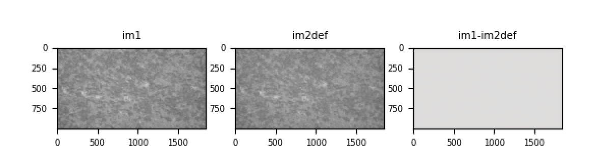
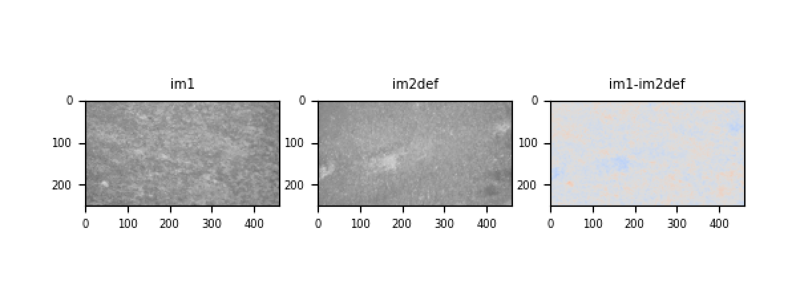
Original animations from the project presentation show the experimental analysis. The tests explored distance and surface texture as factors affecting the observed pixel response.
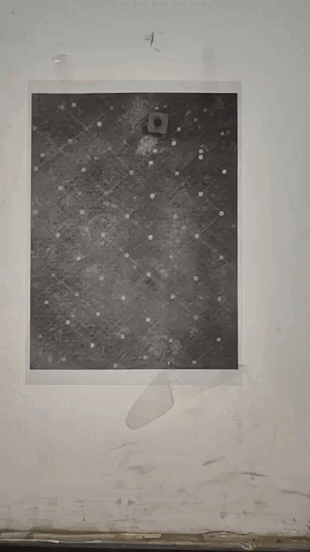
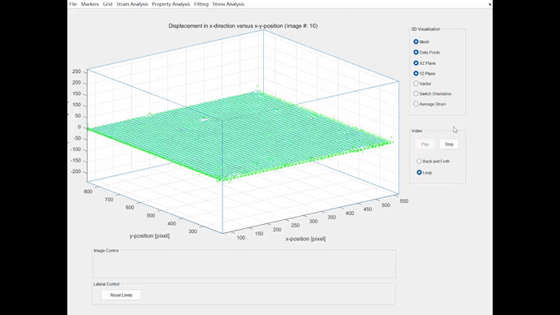
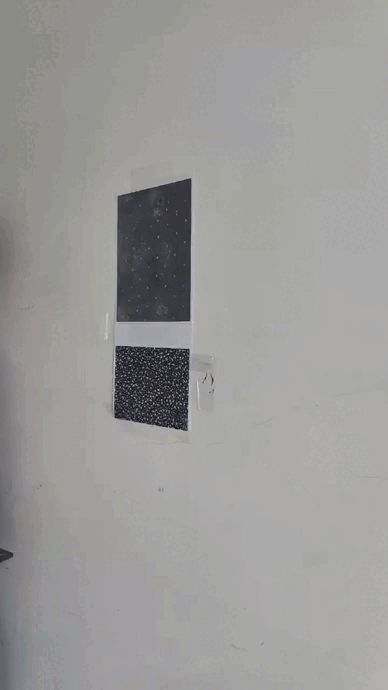
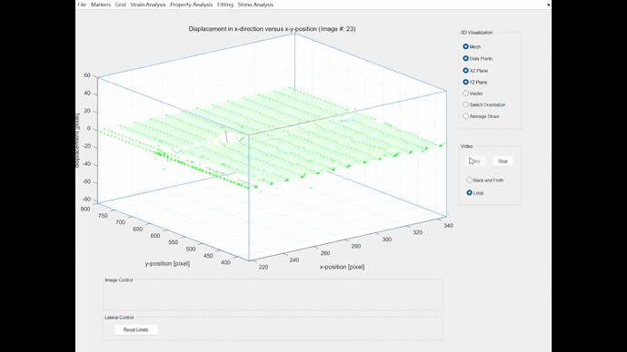
The project resulted in registered software for non-contact micro-motion analysis and monitoring in high-risk industrial environments.
The work also produced an image registration and deformation analysis workflow, experimental visualisations using field imagery, and supporting technical reports.
Further development: out-of-plane motion and very small changes remained challenging. Alarm thresholds required further validation at the completion-report stage.
Investigated how LiDAR point clouds can provide geometric support for Gaussian scene reconstruction, while multi-view images optimise appearance. Evaluated the approach on PandaSet and DJI industrial inspection imagery.
Initialised Gaussian centres from LiDAR points and used point colours and local neighbour distances to set appearance and scale. Geometric anchors constrained centre movement during image-based optimisation.
For industrial imagery, aligned camera parameters and DJI Terra exterior orientations with the point cloud. Generated ROI masks from projected points to focus supervision on the target equipment.
Tools: Python, PyTorch, gsplat, NumPy, Laspy, PyProj, CUDA and WSL2.
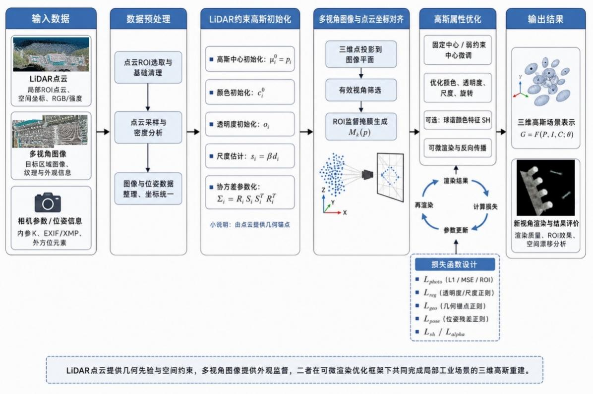
Evaluated sequence 019 using a local 25-frame block with 60 training views and 15 test views. The best reported setting used approximately 600,000 Gaussians with detail supervision and late alpha refinement.
Reconstructed local equipment regions in DJI inspection imagery using calibrated point projections and ROI masks. The best reported masked PSNR used image width 768, mask dilation radius 1, and 1,200 training iterations.
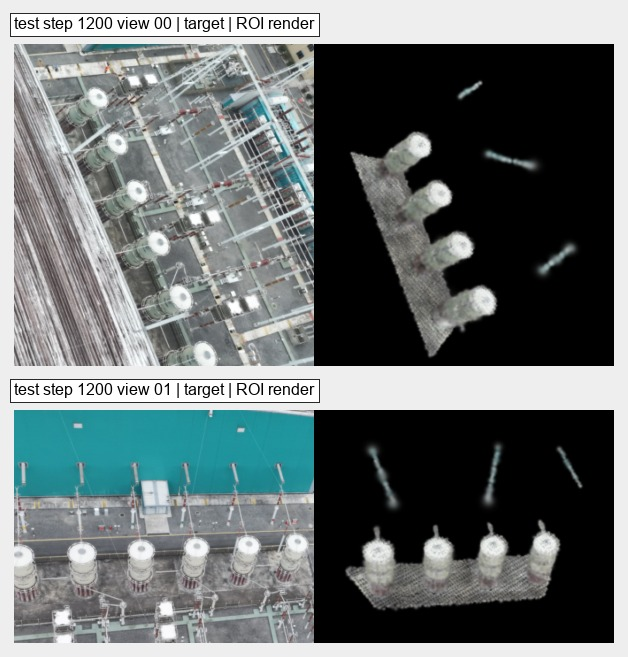
LiDAR initialisation and anchoring improved geometric stability in the reported experiments. On the industrial dataset, projection masks and effective view coverage helped concentrate learning on the equipment rather than the surrounding background.
PandaSet PSNR and DJI masked PSNR measure different evaluation regions on different datasets and should be read separately. Remaining challenges include dynamic objects, occlusion, pose sensitivity, and blurred fine details.